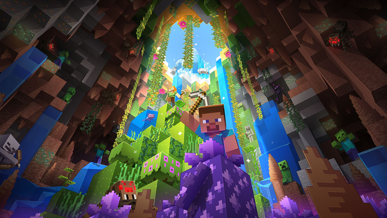
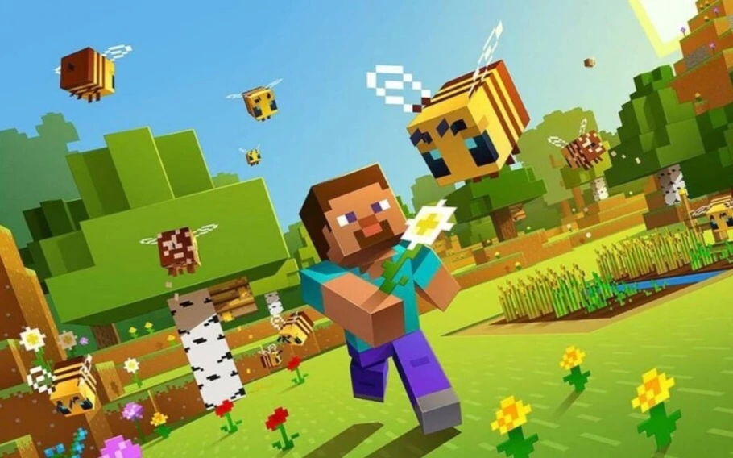
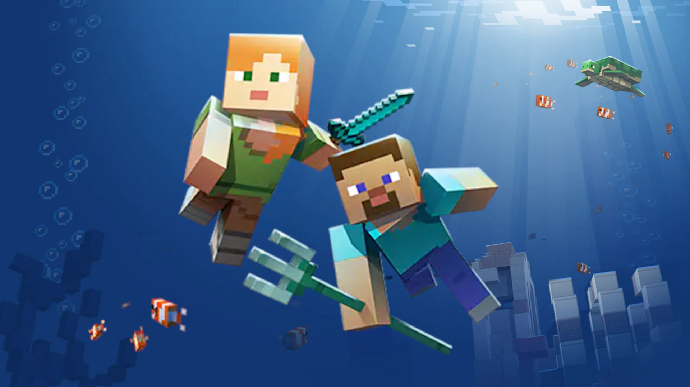
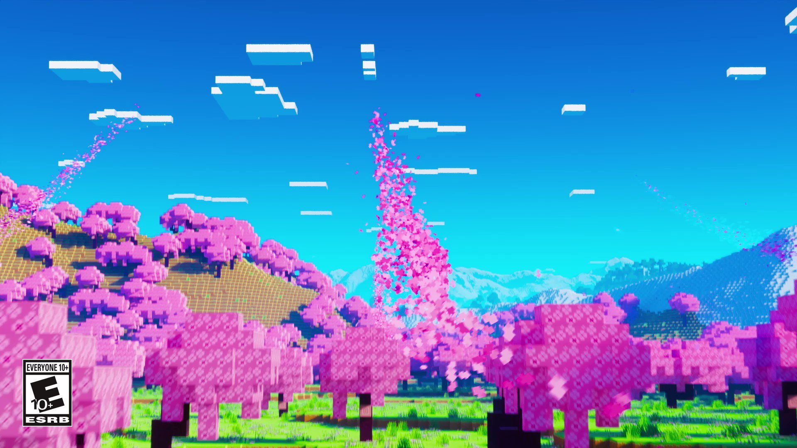

Com cerca de 3,6 milhões de jogadores ativos e mais de 140 milhões de cópias vendidas, Minecraft é considerado um dos jogos favoritos dos pequenos gamers. Esse foi um dos motivos que fez a Microsoft pagar dois bilhões e meio de dólares pela produtora do game. Na época, a empresa afirmou que Minecraft era "o jogo que os pais querem que seus filhos joguem".
Mas é natural sempre quer saber mais sobre o que os pequenos estão jogando, como o game funciona e se tem algum risco, não é mesmo? Por isso, o Game On preparou um guia bem detalhado explicando o que é Minecraft e tudo o que você precisa saber para acompanhar a diversão dos jogadores mais jovens.
Minecraft é um jogo em que você constrói coisas com blocos, em um mundo virtual aberto e livre para explorar. É o que os gamers chamam de 'sandbox', porque funciona mesmo como uma caixa de areia, em que o único limite para o jogador é a própria imaginação e a prática. No game, é preciso minerar e coletar recursos para construir coisas - ou para sobreviver, mas a gente já chega nessa parte.
Não há níveis para superar ou pontos num placar. Você imagina o que quer fazer, junta os recursos que vai precisar e constrói. Existem criações incríveis, que vão desde réplicas de fases de outros games, como Sonic ou Zelda, até recriações de cidades inteiras do mundo real!
O segredo do sucesso de Minecraft é essa liberdade para criar e construir praticamente tudo, é o que faz do jogo tão popular com os pequenos e com jogadores de todas as idades.
Minecraft tem alguns modos de jogo, sendo que os principais são o modo criativo e o modo de sobrevivência.
No modo criativo, os jogadores tem um estoque ilimitado de blocos prontos para usar em um mundo virtual com montanhas, cidades, pessoas e animais. O personagem do jogador nunca vai morrer e pode se mover livremente, até voar pelo mapa.
No modo de sobrevivência, as coisas se parecem mais com um game tradicional: é preciso coletar os recursos certos como madeira, pedra, metal, e assim por diante para construir ferramentas e se proteger, erguer um abrigo e uma fogueira por exemplo. O jogo tem um ciclo de dia e noite, que duram cerca de 20 minutos no mundo real.
Nesse modo há criaturas que atacam durante a noite, mas não se preocupe: elas não são muito assustadoras e não tem sangue na tela nem nada que possa assustar os jogadores menores. Se o personagem não sobreviver por algum motivo, ele reaparece vivo em um lugar seguro para continuar sua aventura.
Sempre que você começa uma partida nova de Minecraft, um novo mundo é gerado. É possível usar uma 'semente' para gerar um mundo específico, é um código com letras e números, e alguns criadores de conteudo divulgam as sementes dos mundos que eles usaram em seus vídeos, para que os jogadores possam usar o mesmo cenário base para suas criações.
Fonte Site Original